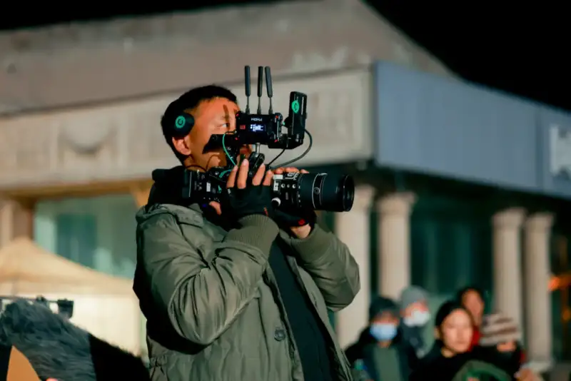
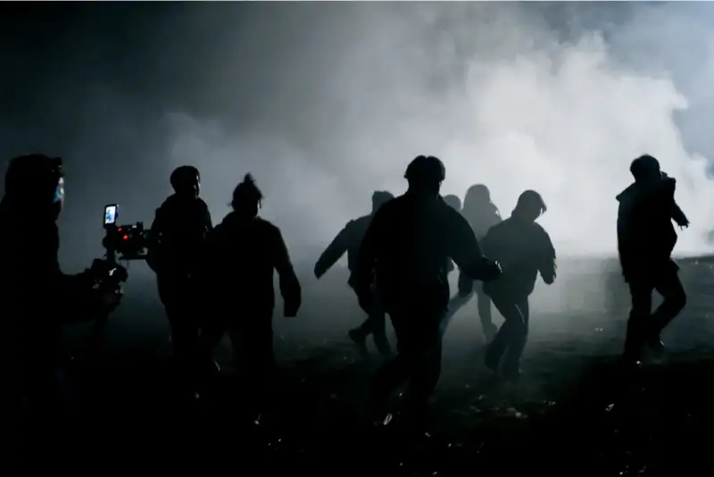
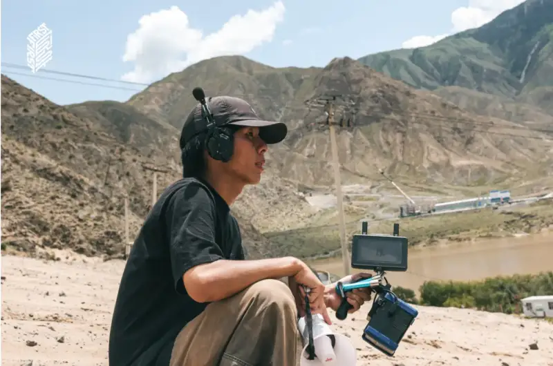

Recently, short dramas such as "White Night Garden" and "See You Next Spring" have held screening sessions one after another. They have drawn steady attention from platforms and the industry. These works all come from the "Red Mirror Short Drama Program." The program was launched together by the FIRST Youth Film Festival and Xiaohongshu. Works such as "Life Video Hall," "Online Tracking," and "Snake" have already built a clear reputation among creators and viewers for their finish and the density of their expression.
In a short-drama market long ruled by the logic of traffic, the Red Mirror program is a landmark attempt. It does not judge success by output. It puts the short drama back in the present moment where "creation" happens. It encourages young directors to use the short drama to complete a more complete, more author-driven body of film work.
On the real sets of these works, Hollyland (HOLLYLAND) is the wireless audio and video partner of the Red Mirror Short Drama Program. It takes part deeply. It provides stable, efficient, and trusted wireless audio and video solutions for short-drama shooting.
At the "See You Next Spring" screening
The "creative upgrade" of the short drama starts on the set
Unlike traditional film and TV production, short-drama shoots move faster, have more set changes, and use tighter budgets. But the professional demands on picture and sound have not dropped.
How do you run a multi-camera team in limited time? How do you keep the director, camera, and light teams in sync through rapid switches? How do you keep dialogue clear and controlled in a complex setting?
These questions are the real hurdles the short drama must face on the way to high-quality creation.
Across several works in the Red Mirror program, Hollyland's Mars series wireless video transmitters and the Solidcom Pro wireless intercom are widely used on set:

Behind the scenes of the short drama "Snake"
The Mars M5 / M7 transmitter monitors and the Mars H wireless video link support wireless multi-camera monitoring. They let the director, camera, and light teams judge the picture in sync. Decisions no longer lag behind. They are made on the spot, which greatly speeds up teamwork. In shoots with frequent set changes and tight space, the wireless link cuts the load of cables and makes the blocking more flexible. It also gives steady support to the dense shooting that short dramas require.

Behind the scenes of the short drama "Snake"
The Solidcom Pro intercom makes sure on-set commands reach people instantly. In complex blocking and teamwork, it keeps creative calls from being broken by background noise and distance.
This gear is not technology for its own sake. It is built into the real workflow of the short-drama set. It becomes the infrastructure that creators can trust.
From FIRST to Red Mirror: a continuation of the standard for creation
In fact, this is not the first time Hollyland has walked with the system of young filmmakers.
As a long-term partner of the FIRST Youth Film Festival, Hollyland provides wireless audio and video support for the talent program training camp and high-intensity shooting. Under the harsh conditions of tight schedules, outdoor settings, and industrial workflows, it solves the real problems young filmmakers face with on-set coordination, monitoring, and blocking. Its wireless video and intercom products also complete the loop from test trials to real use on a working set.

Behind the scenes at the FIRST training camp
In wider work, Hollyland's professional gear has served large projects such as "The Wandering Earth," "To the Bright Side," and "The Longest Day in Chang'an," as well as concerts and sports events. It has been tested in complex settings and high-intensity production.
From film to short drama, the form of image keeps changing. But the demand for professionalism, certainty, and teamwork stays the same. This partnership with the Red Mirror program is the natural extension of that creative standard into a new content form.
Supporting young filmmakers goes further than this
As a professional wireless audio and video brand, Hollyland keeps serving real sets at every stage and in every form, with its full line of products, from wireless video links and intercoms to wireless mics and live cameras.
For Hollyland, the growth of young filmmakers does not depend on one moment of exposure. It needs steady, systematic support.
Toward this goal, Hollyland has built a support system for young filmmakers that covers professional festivals, campus creation, user communities, and social innovation.
From professional sets to public issues, from festival training to everyday creation, Hollyland always stands where creation happens.
Hollyland believes that when technology truly serves expression, and the tool is no longer a burden on creation, content can reach its own authorial moment in the instant it happens.